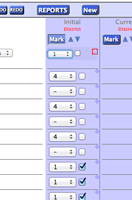

Marking
Mark many selected students with auto-fill marking
Remember 'why' but adding a comment to any mark
Move activity columns around or hide them for easy access to current topics
Organize
Sort by name and mark value
'Note' type marks let you organize comments and observations about students
Create saved filters to organize students into groups
Collaborate
Make new gradebooks for selected students
Attach some or all of standards and activities to mark
Create saved filters to organize students into groups